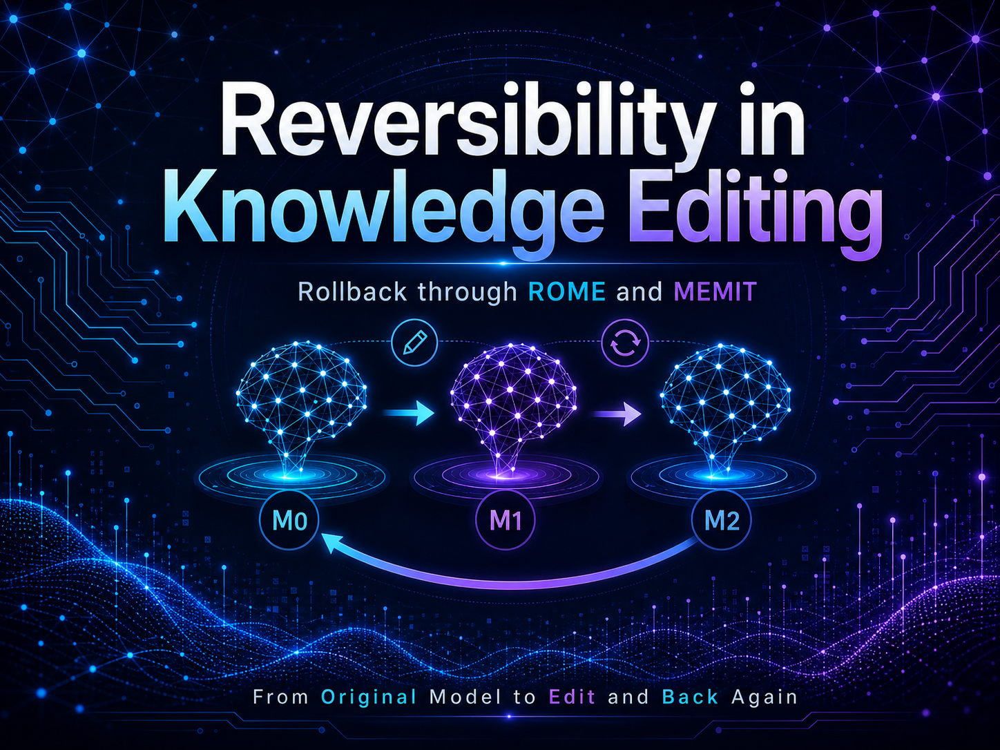
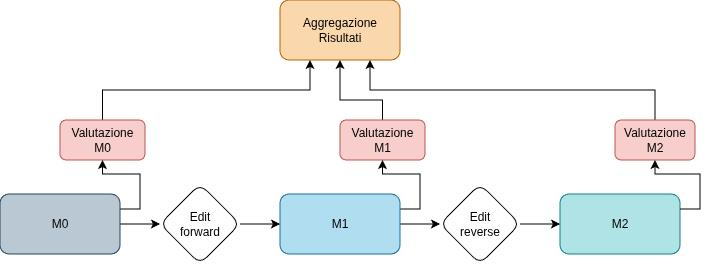
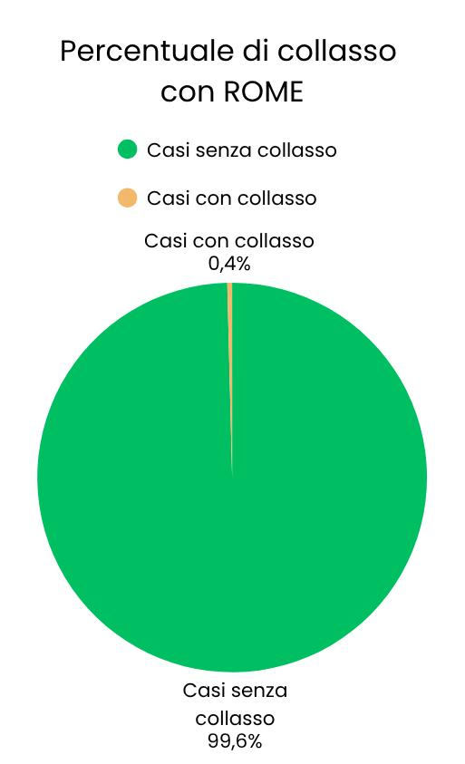
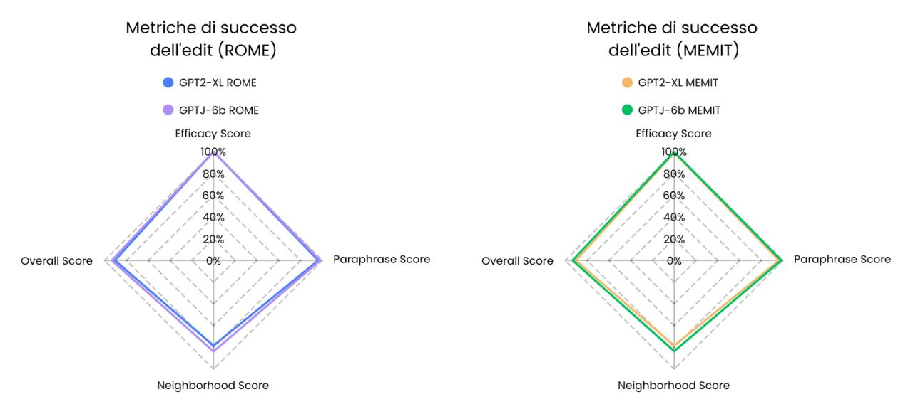
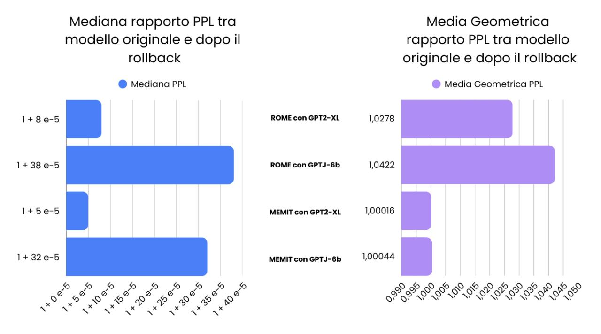

Supporting Rollback in Parametric Knowledge Editing
Research and academic paper on reverting parametric edits applied to large language model weights — enabling safer, more manageable knowledge infrastructures built on top of LLMs.

Overview
Parametric knowledge editing is an emerging field that explores how to directly modify the factual knowledge stored in a language model's weights, without retraining. While the ability to insert or update facts is well studied, the ability to safely revert those changes — rolling back an edit after it has been applied — has received far less attention.
This thesis investigates rollback mechanisms for parametric knowledge editing, analyzing what happens to model behavior when edits are applied and then reversed, and what conditions must hold for a rollback to be considered successful. The work examines existing editing methods and proposes evaluation criteria for rollback correctness, covering both the targeted fact and potential side effects on adjacent knowledge.
The research is also connected to a broader vision: moving from traditional database-based knowledge systems toward knowledge infrastructures built directly on top of large language models. In that context, rollback is a fundamental reliability primitive — just as transactions and undo operations are in conventional databases.
The findings were published as an academic paper alongside the thesis.
Gallery




Paper
Il tuo browser non supporta la visualizzazione inline dei PDF. Apri il paper →